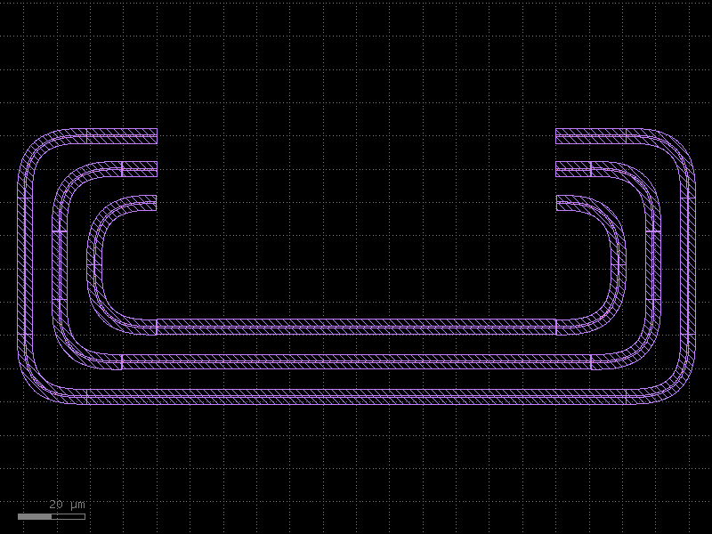
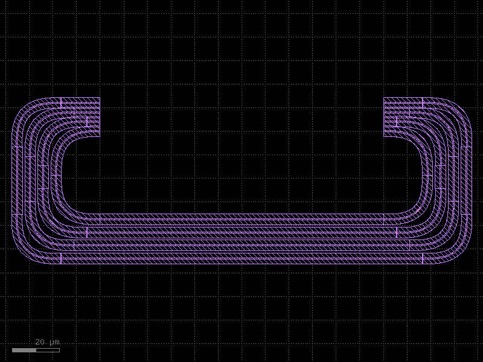
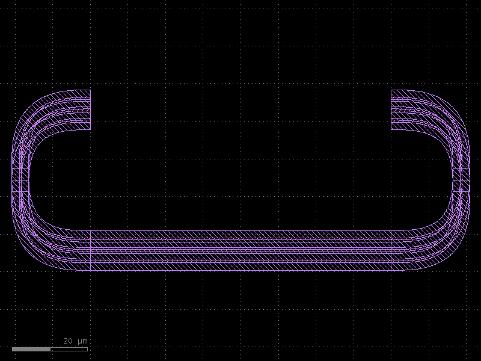
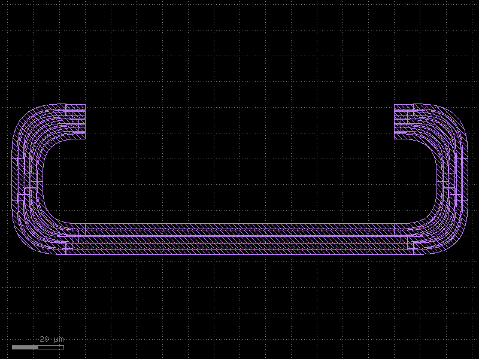
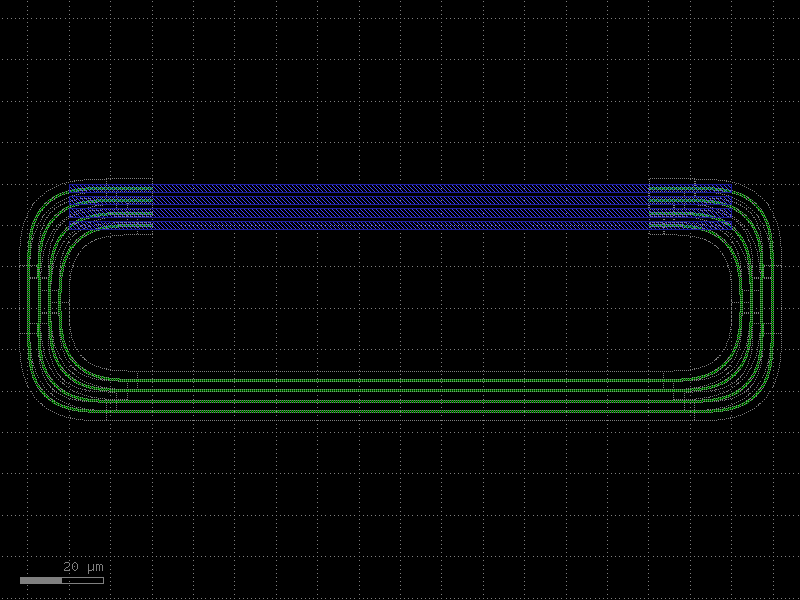
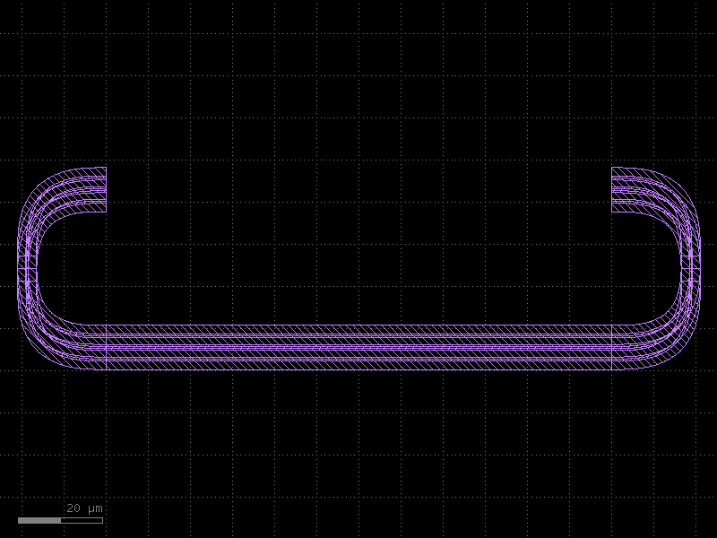
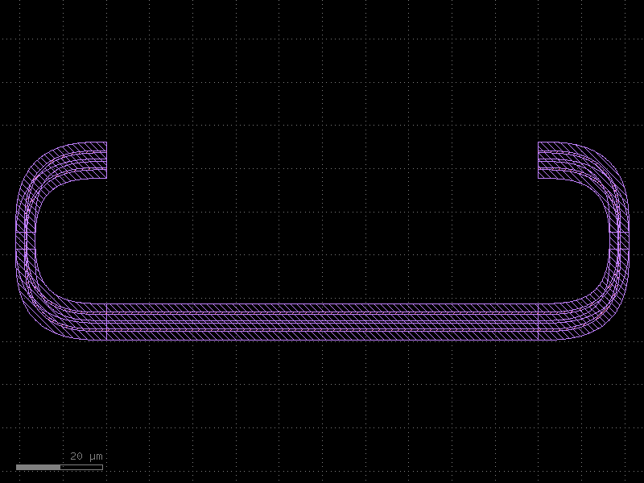

Bundle Routing — Tutorial
route_bundle routes N start ports to N end ports, maintaining spacing and
avoiding obstacles. This page covers parameters that are not shown in the
Routing Overview or Optical Routing Deep Dive.
| Topic | API |
|---|---|
| Automatic port sorting | sort_ports=True |
| Per-bundle separation | separation= (DBU / µm) |
| S-bend compact routing | sbend_factory= |
| Bounding-box strategy | bbox_routing='minimal' / 'full' |
| Obstacle avoidance | bboxes=[...], collision_check_layers= |
| Mismatch tolerance | allow_width_mismatch, allow_type_mismatch |
Setup
from functools import partial
import kfactory as kf
class LAYER(kf.LayerInfos):
WG: kf.kdb.LayerInfo = kf.kdb.LayerInfo(1, 0)
WGCLAD: kf.kdb.LayerInfo = kf.kdb.LayerInfo(2, 0)
METAL: kf.kdb.LayerInfo = kf.kdb.LayerInfo(20, 0)
L = LAYER()
kf.kcl.infos = L
WG_WIDTH = kf.kcl.to_dbu(0.5) # 500 DBU
SEP = kf.kcl.to_dbu(2.0) # 2 µm centre-to-centre extra separation
wg_enc = kf.kcl.get_enclosure(
kf.LayerEnclosure(name="WGSTD_BND", sections=[(L.WGCLAD, 0, 2_000)])
)
bend90 = kf.factories.euler.bend_euler_factory(kcl=kf.kcl)(
width=0.5, radius=10, layer=L.WG, enclosure=wg_enc, angle=90
)
straight_factory = partial(
kf.factories.straight.straight_dbu_factory(kcl=kf.kcl),
layer=L.WG, enclosure=wg_enc,
)
bend_radius = kf.routing.optical.get_radius(bend90)
wl = kf.kcl.find_layer(L.WG)
1 · Port sorting — sort_ports=True
By default route_bundle pairs start_ports[i] with end_ports[i]. If the two
lists are in opposite spatial orders (e.g., start ports run bottom-to-top while end
ports run top-to-bottom), routes will cross each other.
Setting sort_ports=True re-orders both lists by position so that the port closest
to the bottom on the start side connects to the port closest to the bottom on the
end side — eliminating crossings.
# Start ports are ordered top-to-bottom; end ports are ordered bottom-to-top.
# Without sort_ports the routes would cross.
@kf.cell
def bundle_sorted() -> kf.KCell:
c = kf.KCell()
start_ports = [
c.create_port(
name=f"in{i}",
trans=kf.kdb.Trans(2, False, -60_000, (2 - i) * 10_000), # reversed Y
width=WG_WIDTH,
layer=wl,
port_type="optical",
)
for i in range(3)
]
end_ports = [
c.create_port(
name=f"out{i}",
trans=kf.kdb.Trans(0, False, 60_000, i * 10_000), # normal Y
width=WG_WIDTH,
layer=wl,
port_type="optical",
)
for i in range(3)
]
# Use a wider local separation matching the 10µm port pitch — the
# global SEP=2µm would require the router to bend each route to
# compress the bundle, which collides with adjacent route bends.
kf.routing.optical.route_bundle(
c,
start_ports=start_ports,
end_ports=end_ports,
separation=kf.kcl.to_dbu(10),
straight_factory=straight_factory,
bend90_cell=bend90,
sort_ports=True, # ← automatically matches by Y position
)
return c
c_sorted = bundle_sorted()
c_sorted.plot()

Without sort_ports=True the same port lists would produce three crossing routes.
Sorting resolves the crossing by pairing ports at the same relative position.
2 · Separation between routes
separation sets the minimum centre-to-centre distance between adjacent routes
in the bundle. Increase it to open up more space between waveguides, for example
near dense arrays where cladding layers would otherwise overlap.
@kf.cell
def bundle_wide_sep() -> kf.KCell:
c = kf.KCell()
N = 4
for i in range(N):
c.create_port(
name=f"in{i}",
trans=kf.kdb.Trans(2, False, -60_000, i * 4_000),
width=WG_WIDTH, layer=wl, port_type="optical",
)
c.create_port(
name=f"out{i}",
trans=kf.kdb.Trans(0, False, 60_000, i * 4_000),
width=WG_WIDTH, layer=wl, port_type="optical",
)
kf.routing.optical.route_bundle(
c,
start_ports=list(c.ports.filter(port_type="optical", regex="^in")),
end_ports=list(c.ports.filter(port_type="optical", regex="^out")),
separation=kf.kcl.to_dbu(5.0), # 5 µm — wider than the default 2 µm
straight_factory=straight_factory,
bend90_cell=bend90,
on_collision=None,
)
return c
bundle_wide_sep().plot()

3 · S-bend factory for compact fan-in / fan-out
When start and end ports are already colinear (same angle, facing each other),
ordinary bend-based routing adds large out-of-plane detours. Passing an
sbend_factory lets the router use S-bends instead — halving the vertical extent
and producing a much more compact layout.
sbend_factory = kf.factories.euler.bend_s_euler_factory(kcl=kf.kcl)
@kf.cell
def bundle_sbend() -> kf.KCell:
"""Three parallel waveguides with an S-bend-optimised route."""
c = kf.KCell()
N = 3
pitch = 3_000 # 3 µm pitch, same on both sides
start_ports = [
c.create_port(
name=f"in{i}",
trans=kf.kdb.Trans(2, False, -40_000, i * pitch),
width=WG_WIDTH, layer=wl, port_type="optical",
)
for i in range(N)
]
end_ports = [
c.create_port(
name=f"out{i}",
trans=kf.kdb.Trans(0, False, 40_000, i * pitch),
width=WG_WIDTH, layer=wl, port_type="optical",
)
for i in range(N)
]
kf.routing.optical.route_bundle(
c,
start_ports=start_ports,
end_ports=end_ports,
separation=SEP,
straight_factory=straight_factory,
bend90_cell=bend90,
sbend_factory=sbend_factory, # ← enables S-bend optimisation
on_collision=None,
)
return c
bundle_sbend().plot()

4 · Bounding-box routing strategy — bbox_routing
When obstacle boxes (bboxes=) are present the router must decide how far around
them to detour.
| Value | Behaviour |
|---|---|
'minimal' (default) |
Each route takes the shortest path around the obstacle. |
'full' |
All routes share a single bounding path — the bundle stays intact as it detours. |
'full' produces cleaner layouts when you want the bundle to remain grouped around
obstacles; 'minimal' produces tighter total area when individual routes can fan
around obstacles independently.
blocker = kf.kdb.Box(-8_000, 0, 8_000, 12_000) # obstacle in DBU
@kf.cell
def bundle_bbox_minimal() -> kf.KCell:
c = kf.KCell()
N = 4
for i in range(N):
c.create_port(
name=f"in{i}",
trans=kf.kdb.Trans(2, False, -60_000, i * 3_000),
width=WG_WIDTH, layer=wl, port_type="optical",
)
c.create_port(
name=f"out{i}",
trans=kf.kdb.Trans(0, False, 60_000, i * 3_000),
width=WG_WIDTH, layer=wl, port_type="optical",
)
kf.routing.optical.route_bundle(
c,
start_ports=list(c.ports.filter(port_type="optical", regex="^in")),
end_ports=list(c.ports.filter(port_type="optical", regex="^out")),
separation=SEP,
straight_factory=straight_factory,
bend90_cell=bend90,
bboxes=[blocker],
bbox_routing="minimal",
on_collision=None,
)
return c
@kf.cell
def bundle_bbox_full() -> kf.KCell:
c = kf.KCell()
N = 4
for i in range(N):
c.create_port(
name=f"in{i}",
trans=kf.kdb.Trans(2, False, -60_000, i * 3_000),
width=WG_WIDTH, layer=wl, port_type="optical",
)
c.create_port(
name=f"out{i}",
trans=kf.kdb.Trans(0, False, 60_000, i * 3_000),
width=WG_WIDTH, layer=wl, port_type="optical",
)
kf.routing.optical.route_bundle(
c,
start_ports=list(c.ports.filter(port_type="optical", regex="^in")),
end_ports=list(c.ports.filter(port_type="optical", regex="^out")),
separation=SEP,
straight_factory=straight_factory,
bend90_cell=bend90,
bboxes=[blocker],
bbox_routing="full",
on_collision=None,
)
return c
bundle_bbox_minimal().plot()

bundle_bbox_full().plot()

5 · Collision-check layers
By default kfactory does not check for physical overlaps between routes and existing
geometry. Pass collision_check_layers= to enable the check on specific layers.
Use on_collision=None in scripts or notebooks to suppress the KLayout interactive
error dialog; use on_collision='error' in CI to fail hard.
@kf.cell
def bundle_collision_check() -> kf.KCell:
c = kf.KCell()
N = 3
for i in range(N):
c.create_port(
name=f"in{i}",
trans=kf.kdb.Trans(2, False, -60_000, i * 3_000),
width=WG_WIDTH, layer=wl, port_type="optical",
)
c.create_port(
name=f"out{i}",
trans=kf.kdb.Trans(0, False, 60_000, i * 3_000),
width=WG_WIDTH, layer=wl, port_type="optical",
)
kf.routing.optical.route_bundle(
c,
start_ports=list(c.ports.filter(port_type="optical", regex="^in")),
end_ports=list(c.ports.filter(port_type="optical", regex="^out")),
separation=SEP,
straight_factory=straight_factory,
bend90_cell=bend90,
collision_check_layers=[L.WG, L.WGCLAD], # ← layers to check
on_collision=None, # suppress dialog in notebooks; use 'error' in CI
)
return c
bundle_collision_check().plot()

6 · Mismatch tolerance flags
route_bundle checks that paired ports share the same width, layer, and port type.
Relax individual checks when connecting different structures:
| Flag | Effect |
|---|---|
allow_width_mismatch=True |
Accept ports with different widths |
allow_layer_mismatch=True |
Accept ports on different layers |
allow_type_mismatch=True |
Accept ports with different port_type strings |
These flags do not insert tapers — the route simply uses the width/layer of the
first (start) port. Insert explicit taper_cell for mode-converting transitions.
@kf.cell
def bundle_type_mismatch() -> kf.KCell:
"""Connect 'optical' start ports to 'pin' end ports."""
c = kf.KCell()
N = 2
start_ports = [
c.create_port(
name=f"wg{i}",
trans=kf.kdb.Trans(2, False, -50_000, i * 4_000),
width=WG_WIDTH, layer=wl, port_type="optical",
)
for i in range(N)
]
# End ports have a different port_type
end_ports = [
c.create_port(
name=f"pin{i}",
trans=kf.kdb.Trans(0, False, 50_000, i * 4_000),
width=WG_WIDTH, layer=wl, port_type="pin",
)
for i in range(N)
]
kf.routing.optical.route_bundle(
c,
start_ports=start_ports,
end_ports=end_ports,
separation=SEP,
straight_factory=straight_factory,
bend90_cell=bend90,
allow_type_mismatch=True, # ← suppress port_type equality check
on_collision=None,
)
return c
bundle_type_mismatch().plot()

Parameter quick-reference
| Parameter | Type | Default | Notes |
|---|---|---|---|
separation |
DBU / µm | — | Min centre-to-centre spacing |
sort_ports |
bool |
False |
Sort both lists by position before pairing |
sbend_factory |
factory or None |
None |
Use S-bends for compact lateral shifts |
bbox_routing |
'minimal' / 'full' |
'minimal' |
How the bundle detours around bboxes |
bboxes |
list[kdb.Box] |
None |
Physical obstacles to route around |
collision_check_layers |
list[LayerInfo] |
None |
Layers checked for geometric overlap |
on_collision |
'error' / 'show_error' / None |
'show_error' |
Action on collision |
allow_width_mismatch |
bool |
None |
Skip width equality check |
allow_layer_mismatch |
bool |
None |
Skip layer equality check |
allow_type_mismatch |
bool |
None |
Skip port_type equality check |
route_width |
DBU / list[DBU] |
None |
Override wire width per route |
starts / ends |
DBU / steps | None |
Entry/exit stub lengths (see optical.py) |
waypoints |
Trans / list[Point] |
None |
Force routes through a point (see optical.py) |
path_length_matching_config |
PathLengthConfig |
None |
Equal-length routing (see optical.py) |
See Also
| Topic | Where |
|---|---|
| Single-route optical options: waypoints, loopbacks, stubs | Routing: Optical |
| Electrical bundle routing | Routing: Electrical |
| Equal path-length loops inside a bundle | Routing: Path Length |
| Manhattan backbone that bundle routing uses internally | Routing: Manhattan |
| Routing overview and sub-module map | Routing: Overview |
| Port sorting and orientation | Core Concepts: Ports |